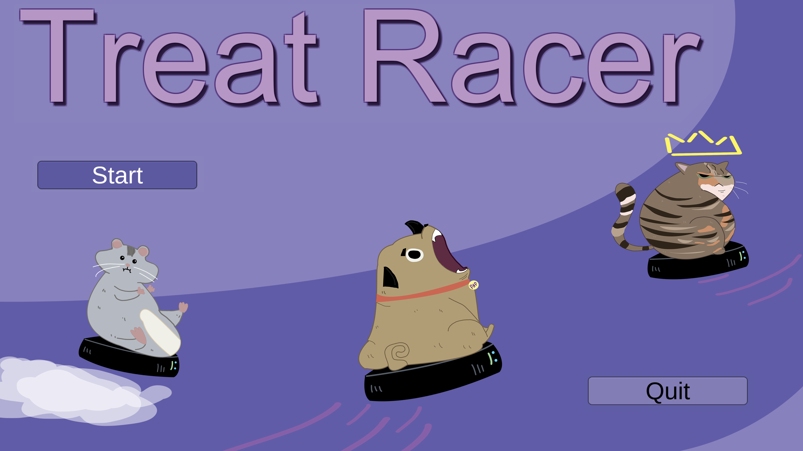
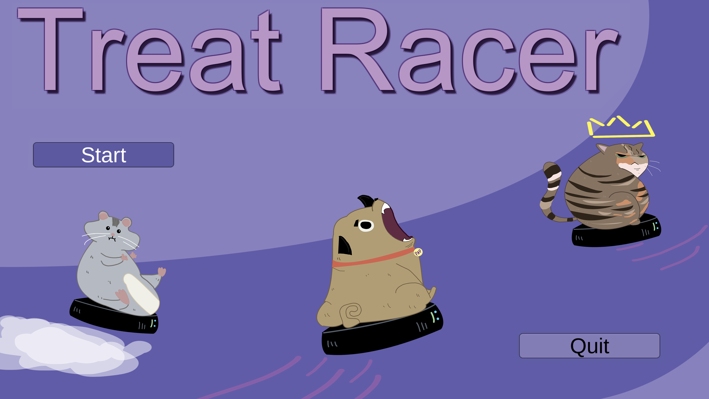

Character Art
This page highlights various character-focused artwork — from pixel sprites and concept paintings to UI screens and portraits. Each piece explores personality, visual identity, and expression through design, color, and pose.


This page highlights various character-focused artwork — from pixel sprites and concept paintings to UI screens and portraits. Each piece explores personality, visual identity, and expression through design, color, and pose.
This piece is a 2D painting of a real 3D Loki Funko Pop figure. One of the main challenges was translating the depth of a physical object into a flat medium. I focused heavily on working with grayscale values—using whites to highlight raised surfaces and blacks to push back shadows, creating the illusion of depth.
Since I was turning a 3D character into a 2D artwork, it was important to capture every detail accurately—from the shape of the helmet to the subtle curves and textures of the figure. My goal was to make it feel like you could almost reach out and pick it off the screen.

Here’s a character I created named Rico for my 2D platformer game, Raccoon Raid. I designed and built this entire project myself — everything from the character animations and props to the backgrounds and gameplay was created by me in Unity. In the game, you play as Rico the raccoon, trying to sneak safely across chaotic neighborhood backyards without getting caught by angry grandmas or falling for booby traps set by annoyed residents.
To defend yourself, you can launch poop projectiles and outsmart your enemies with clever timing. It’s a silly, fast-paced adventure packed with personality and a whole lot of raccoon mischief.
 

Welcome to Treat Racer — a silly, high-energy game where you play as Pop the cat and race against Pap the dog and Pip the hamster, each mounted on wacky vacuums. The first animal to reach the finish line wins a mountain of tasty pet treats—and, of course, ultimate bragging rights.
The game leans fully into a goofy and lighthearted style, and I reflected that in my design work by keeping things simple. Each pet racer was based on real animals I’ve known, which made the process more personal and fun.
Pop was inspired by the lead coder’s beautifully colored cat, full of grace and sass. Pap, the wide-eyed, slightly clueless dog, was modeled after my cousin’s hilarious pug. And Pip, the chaotic little hamster, was inspired by my friend’s tiny mouse who never seemed to sit still. Designing these characters was not only creatively rewarding but also a way to bring a bit of real-world charm into our over-the-top racing world.

This is the main menu screen I designed for the game GMU Drift. I began the process by creating several concept sketches, which I presented to the design team. They selected the version that best matched the overall tone of the game. From there, I moved on to basic coloring and shading.
During feedback sessions, the team suggested removing the character at the bottom of the screen to reduce visual clutter and keep the focus on the scene. I also added a background and revised the golf carts to match updated in-game models that were introduced later in the project.
Overall, this experience taught me a lot about receiving and incorporating feedback effectively, as well as the importance of collaboration and flexibility when working as part of a creative team.
This was a 2D animation project titled Stalking, where I experimented heavily with purples to create a mysterious and moody atmosphere. The story follows a young girl who senses a slow, creeping presence trailing behind her as she walks through the woods. Just as the tension builds and she prepares to confront whatever is following her, the creature suddenly gives chase.
But in a twist of humor, it turns out to be nothing more than her chunky old cat, simply looking for food. This project was a fun mix of suspense and comedy, and a great opportunity to play with lighting, pacing, and visual storytelling.
This was my very first pixel art drawing, and the moment I realized I wanted to continue pursuing pixel art. The hare is only 48 by 48 pixels, but even at that tiny scale, I wanted to give it a sense of motion and personality.
This piece was a simple character concept where I focused on capturing charm through silhouette and subtle shading. I experimented with light and shadow to add just enough depth to make the form feel dimensional, without overcomplicating the design.
The goal was to keep the character readable and expressive at a small size—perfect for games where clarity and style have to shine through in just a few pixels. It was a fun and rewarding challenge in balancing minimalism with detail to bring the hare to life.